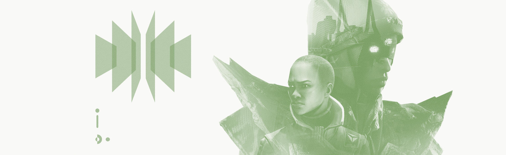

Ikora Rey: “Your tea has gone cold.”
I had forgotten Ikora handed it to me. My thoughts are preoccupied.
Eris Morn: “I… have been burned before.”
I: “Was that a joke from the dark and brooding Eris Morn? I’m shocked.”
E: “The universe has many corners. There is much that is shocking still left to uncover."
The moment hangs for us both.
I: “I was thinking: We should go down to the City. There’s a great ramen shop there. Perfect blend of spice and flavor.”
E: “That would be nice.”
She’s studying me now. Does she know?
I: “You’re leaving.”
She always sees through me.
I: “Tell me I’m wrong.”
E: “There is a greater purpose.”
This does little to satisfy her. Her face carries the weight of disappointment.
I: “When will you be back?”
I have no answer.
I: “So you’re abandoning us.”
E: “There is still much to be done. You don’t know what I have seen.”
I: “We would have been lost without you. We need you here. You know this.”
If I were to tell her where I was I going—what I need to do—she would not allow me to leave.
E: “I have to do this alone. It’s—”
Zavala: “Let her go.”
Zavala. Always has to weigh in.
Z: “Eris has made her decision. You can’t force her to stay.”
I: “I don’t think you know what you’re saying, Zavala. Are you forgetting we only survived because of her?”
Z: “And we’re all grateful, but if we can’t live with the absence of one person, we won’t survive very long.”
This is a battle Ikora can’t win. I won’t let her fight.
E: “Your whispers carry throughout the Tower. Were I not in it, as you would prefer, I wouldn’t have to endure them any further.”
The brave commander can’t even bring himself to look at me.
I: “Is this true?”
Ikora, you already know. I cannot waste more time.
E: “As I told Asher, there is a storm coming...”
I: “Oryx is dead. We’ve weathered the storm.”
Ikora is upset. She has yet to understand the bigger picture.
E: “Yet his sisters would see his will done. There will always be another storm.”
I: “Then let’s weather it together.”
It’s my turn to hang my head.
Z: “We made do without her before. We can do it again.”
I thank Zavala with a nod. We have found common ground. Ikora, however…
I: “You see everything but what you already have.”
She turns to leave and I won’t stop her. She is not wrong.
Z: “Good luck.”
Zavala’s words ring hollow.
It pains me to part in this way, but I can’t endanger anyone else.
I alone have been entrusted with this.
They will come to understand, should I survive.